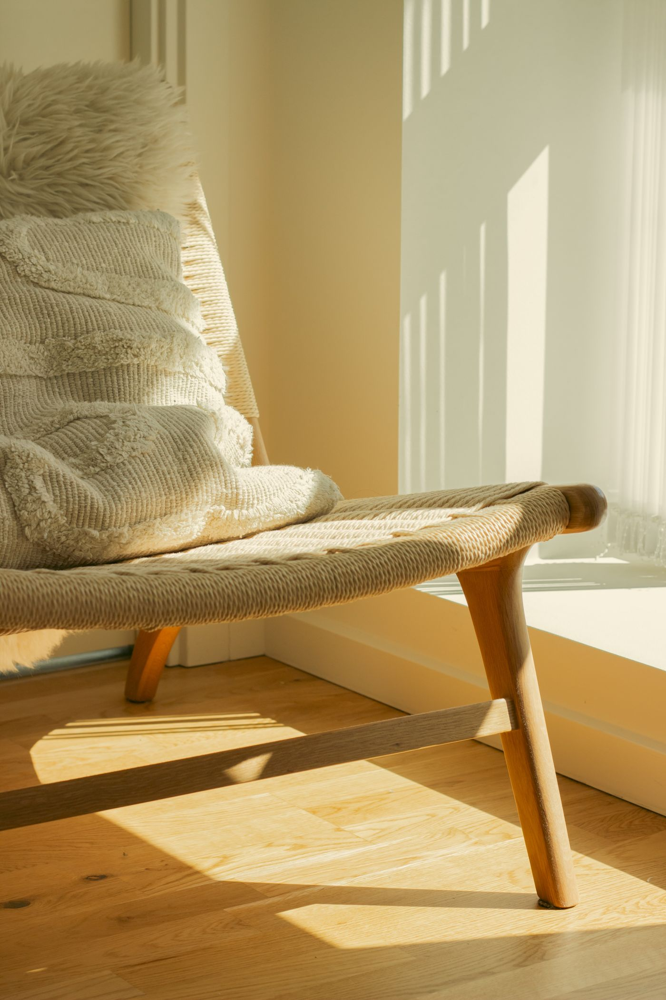
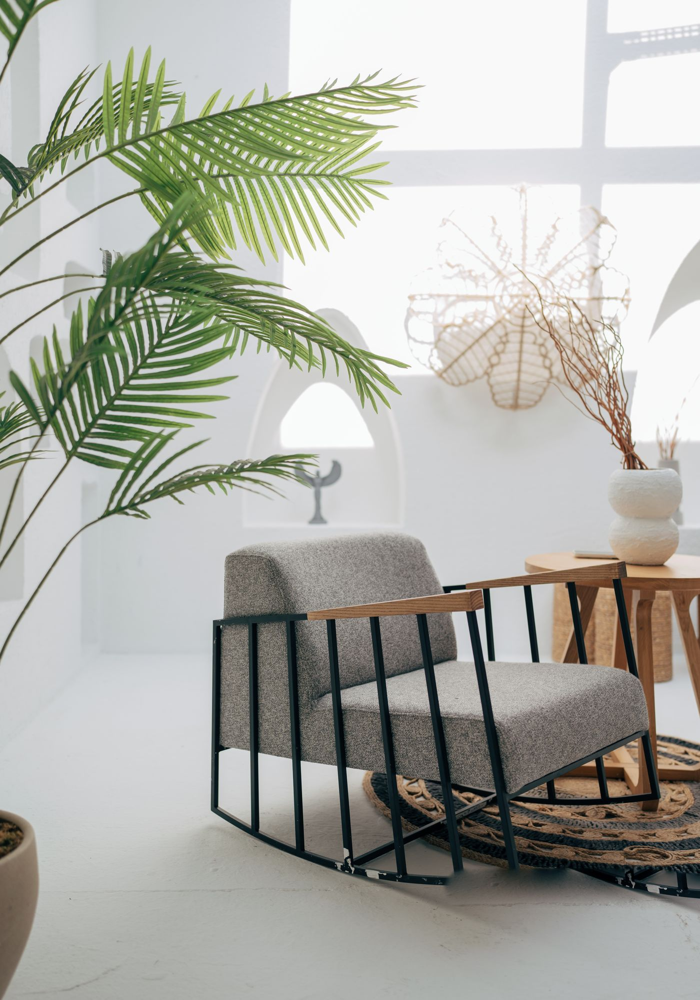

Ga maar
even zitten.
Een fijne plek verandert de hele kamer.
Bekijk de Zonlicht-edit
Volg het licht door je huis.
Verplaats een stoel, leg een boek klaar en kijk hoe de middag door het raam valt. Soms zit een andere kamer gewoon al in je eigen huis.

Een plek om te blijven
Begin bij de stoel waar je echt graag zit.